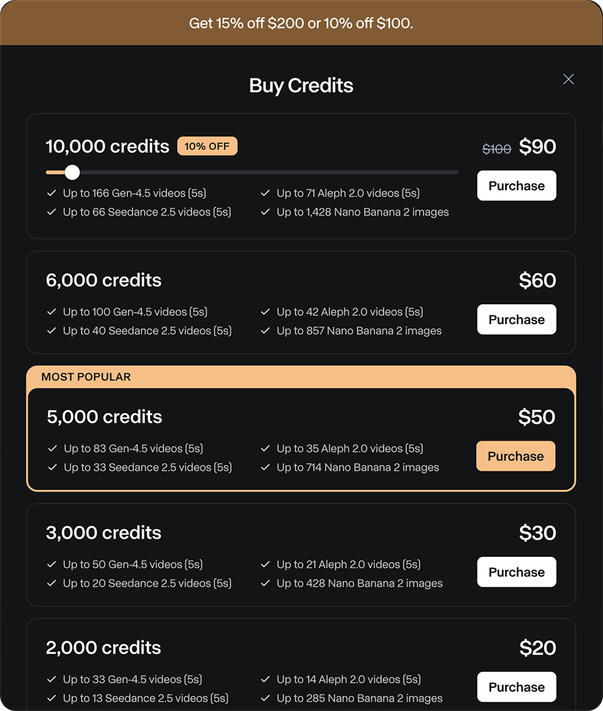
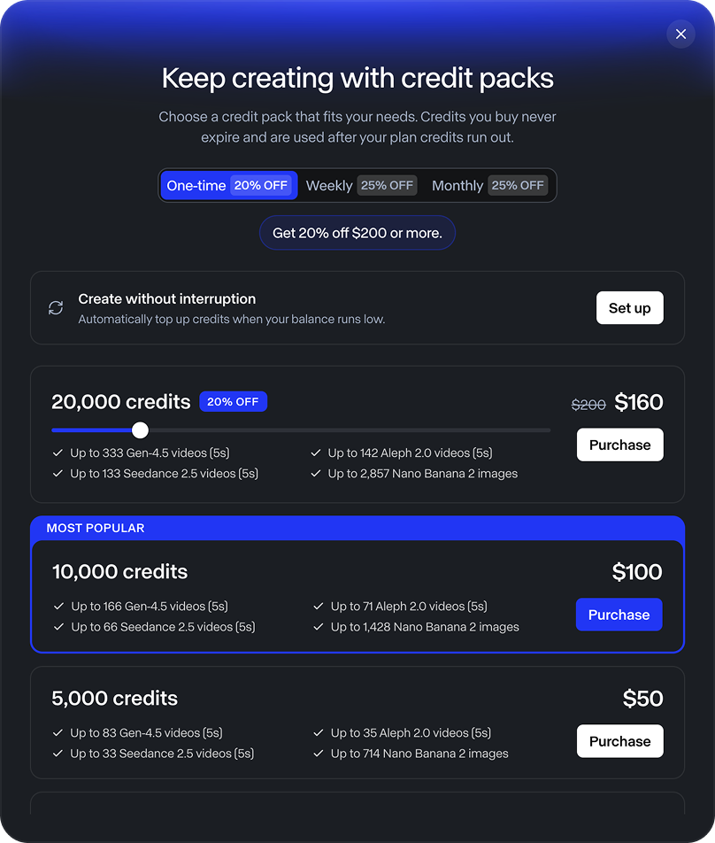
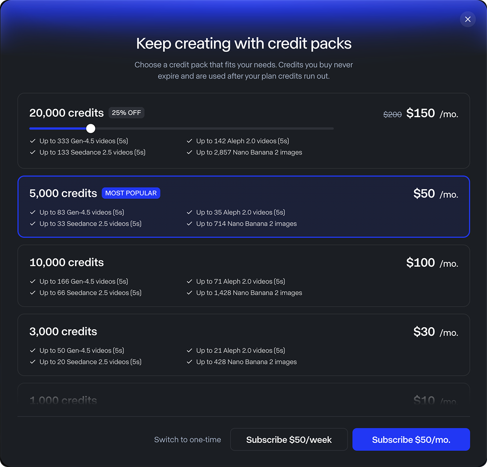
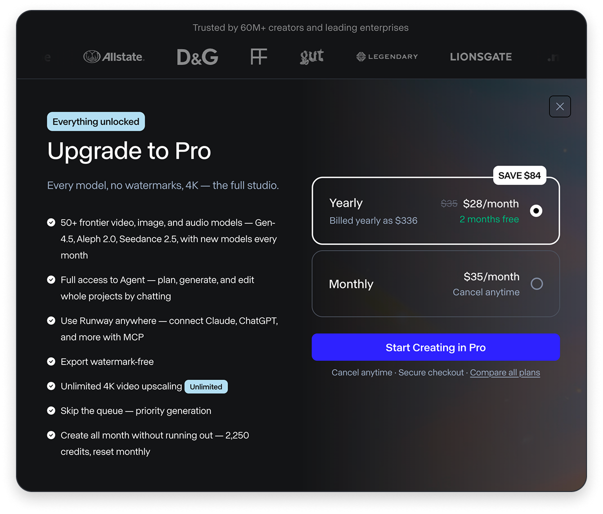
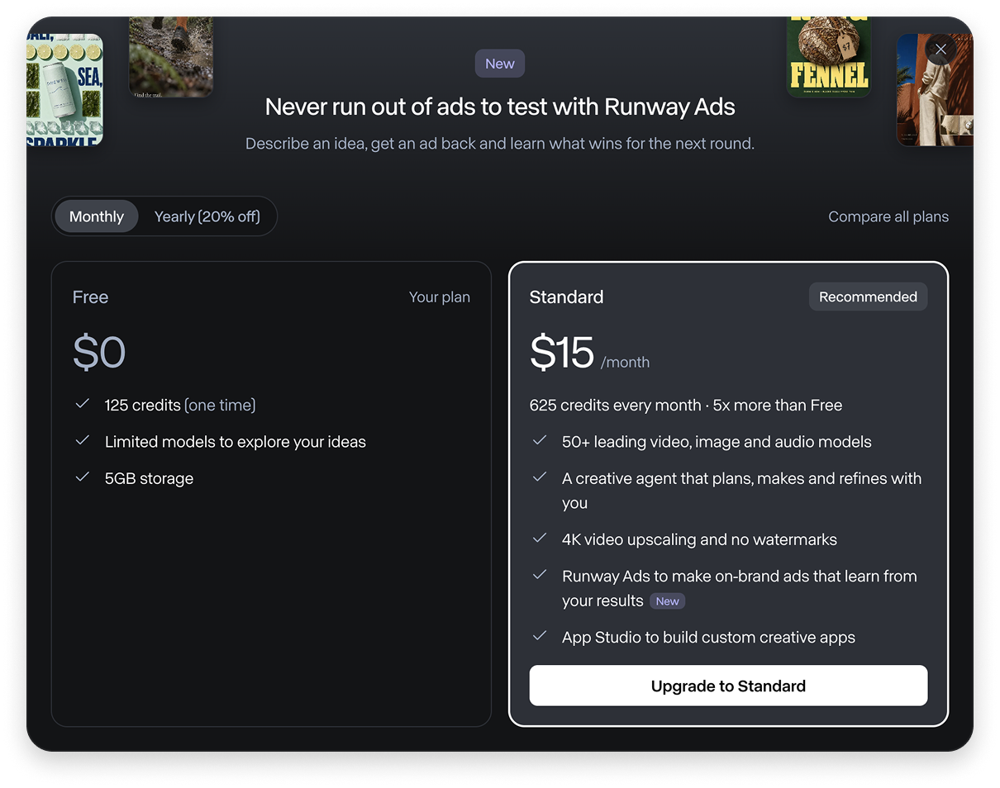
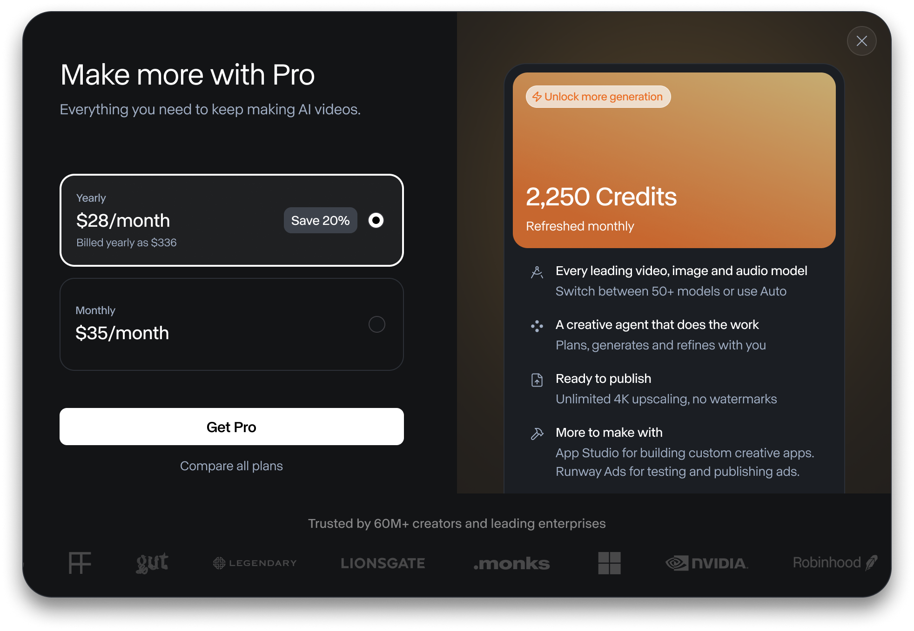

Growth experiments
Bite-size experiments to improve conversion
Credit pack purchases, free-to-paid conversion and cancellations are each direct levers on ARR. I find opportunities like these and ship bite-size A/B experiments with Mixpanel and LaunchDarkly: giving more choice of cadence on credit packs, testing a new-feature upsell against a credit-focused one for free users, and softening the cancellation flow with less emphasis on billing and a “Before you cancel” step.
Experiment 1
Does giving more choice of cadence increase credit pack purchases?
If people can choose one-time, weekly or monthly credit packs, more of them will buy credits. I tested showing cadence options right away against leaning into renewal first.

Variants


Experiment 2
How might we increase Free user conversion?
Free users respond better to an upsell about what they can make next than to a long feature list. I tested a new-feature upsell against a credit-focused one.

Variants


Experiment 3
How might we lower the cancellation rate?
Cancel plan sat next to Update plan as a main action. Moving billing and cancellation out of the spotlight, and offering alternatives before someone cancels, should save more subscriptions.

Variants